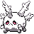

#399
Corsola (Galarian)
Ghost
Abilities: Weak Armor, Weak Armor, Cursed Body
Base stats BST 410
HP60
Attack55
Defense100
Speed30
Sp. Atk65
Sp. Def100
Evolution
dbbw EVOLVE_LEVEL, 38, CURSOLALevel-up learnset
LevelMoveType
Lv. 1HardenNormal
Lv. 1TackleNormal
Lv. 5AstonishGhost
Lv. 7RecoverNormal
Lv. 10DisableNormal
Lv. 13AncientpowerRock
Lv. 15SpiteGhost
Lv. 16HexGhost
Lv. 22Spike CannonNormal
Lv. 25CurseCurse T
Lv. 28AmnesiaPsychic
Lv. 31Power GemRock
Lv. 34Earth PowerGround
Lv. 35Shadow BallGhost
Lv. 37EndureNormal
Lv. 41Power GemRock
Lv. 43WhirlpoolWater
Lv. 45Night ShadeGhost
Lv. 46Mirror CoatPsychic
Lv. 49FlailNormal
Lv. 52Will-O-WispFire
Lv. 56Destiny BondGhost